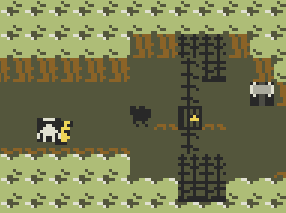

Hi! I'm droqen. Or, Alexander Clair Tseu Martin. (c.v.)
I have been an indie game developer for decades -- as a hobbyist at first, but I was lucky to have been graced by a single commercial success in 2013: Starseed Pilgrim.
Since then, I have attempted to make a sustainable living and mostly been unsuccessful. I cofounded a small indie studio (now defunct) and along with various collaborators released several other small commercial games and products.
Speaking frankly, my experience with independent entrepreneurship lead me to understand that I do not have a comfortable grasp of how to take a game to market. That's okay! It's why we're here.
Over the past couple years I've held two very different full-time jobs, and that's been very educational in understanding how studios and companies function.
Now, fuelled by my recent experience doing game design at a publisher-funded indie game studio (Messhof), and doing game development with an investor-funded game engine tech startup (Ambient), I'm seeking a publisher to work with on a game idea that has a proven gameplay prototype, is quick and easy to develop in response to feedback, and which I deeply understand as a designer.
It goes beyond this one videogame. I am looking for a long-term partnership with someone whose business acumen and perspective inspires me. But, it always starts from doing the work.
I'd talk, in the team part, about how those people are perfect for this job: How you and gab and pancelor are experts in weird small pixelart and puzzles. -Mer
GEOMOTH BOOT SEQUENCE with Gabe and Pancelor; we have experience working together and have a good rapport. I'd like them to come work on this project with me as core team members, and they have expressed their interest in same.
If possible, I plan to work again with Mallory Scott, who did the dark and claustrophic music for HANDMADEDEATHLABYRINTH issue 0 -- but I would be happy to work with another musician and/or sound designer if she is not available or not the right fit.
Kelly Kwang is a comic artist with whom I have collaborated in the past. I'd like to work with her on the branding of the game, on a game manual, and whatever other assets that may be required (e.g. for the title screen).
Finally, I'd like to work with various guest designers on small sections of the game.
In my experience, I find that I design games that anyone can add content to quite easily,
and this will allow us to take advantage of that strength.
The end goal is a coherent world for the player to explore,
with tonally diverse crevices to stumble into.
(The next section, "Organic Production," elaborates on this idea.)

Rooms can be connected or disconnected freely, so we will be free to design many small sections of gameplay. As our collection of designed areas grows, it will become clear how to best structure them. Eventually, the rooms will be connected and ordered, and the world will have an organic, 'grown' feeling.
I have not seen many games be designed in this way intentionally, even though many other forms of media follow this path of drafts that are then edited and put into some better order.

As a player, you participate in a somewhat claustrophic top-down combat 'dance,' using a weapon, or weapons, of your choosing. The heart and soul of this game is its combat. Each screen is a little tactical puzzle/problem of sorts, daring you to figure out the 'right' approach: whether that's facing everything head-on, using a different weapon, or avoiding it entirely.
Secondary to the combat is moving through the world, exploring its nooks and crannies. Looking, perhaps, for a new weapon, or another way around a problem.
There are other non-combat interactions that will flesh out the world: doors that can be unlocked, non-hostile NPCs (who you may or may not be able to talk to), magic spells that change the world and unveil secrets and shortcuts.
There must be a semblance of setting and plot, and there must be a satisfying ending, but these will follow the fun of combat and exploration -- of following your desire to learn & overcome, and your curiousity to discover.
I am interested in an outside eye on how to bring this style to a large audience.

At its most alive, the world feels readable, tangible, complicated. Many small entities interacting on a large stage. (Example below taken from an unrelated project exploring the art style.)
We can very quickly generate a large variety of hand-made spaces that all feel distinct from one another, deeply different.

These are things that make this low-res, pixel-impressionist aesthetic worthwhile from a production standpoint.
From a personal standpoint, I find the style very aesthetically appealing. It is perhaps seen as "retro" or "nostalgic," and I am not above embracing those labels, but to me it has an enduring beauty that I want to explore and bring out in this world.
It is my hope that others can discover their own appreciation of this simple, evergreen art style.
publishers do want to know how much money you need, and how you're gonna use it. You'll need some roadmap -Mer
TODO
Comparisons to other games on the market? IDK, this feels like the reason to get a publisher, that they will do this stuff better than I could.
the "looking for other examples" usually works. Even if you are making something weird and new,
you need to aim to a certain public.
"We're aiming at players who like this or that,
that play games like this or this other successful
title"
-Mer
Thanks for checkin' out the pitch!